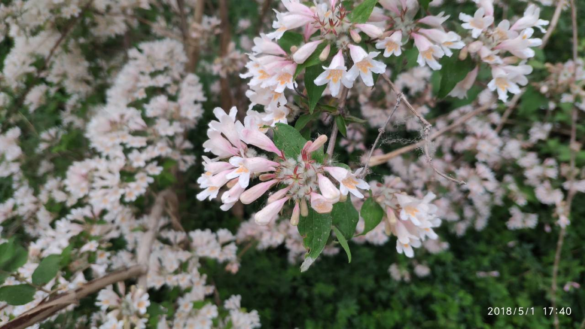
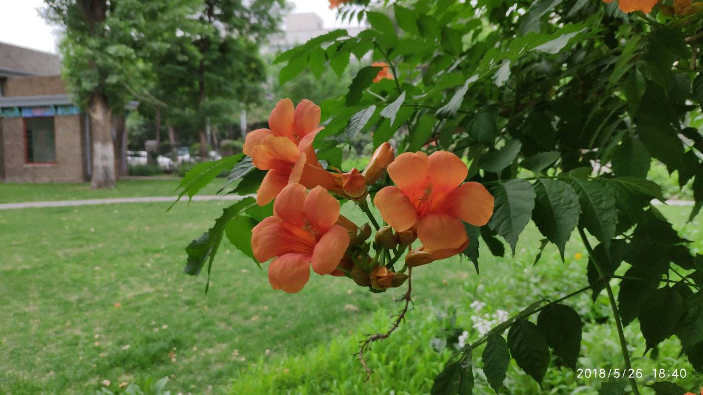
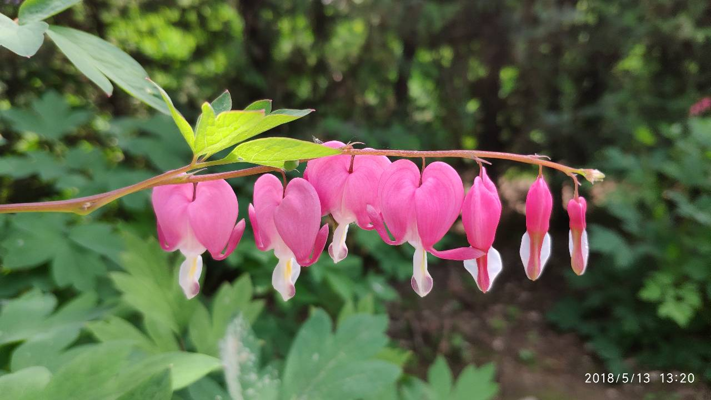

如何辨识户外花草
对我来说，你只是一个小男孩，就像其他成千上万个小男孩一样没有什么两样。我不需要你。你也不需要我。对你来说，我也只是一只狐狸，和其他成千上万的狐狸没有什么不同。但是，如果你驯养了我，我们就会彼此需要。对我来说，你就是我的世界里独一无二的了；我对你来说，也是你的世界里的唯一了。
—— 安东尼·德·圣-埃克苏佩里《小王子》
绿藻
轮藻门 绿藻门
苔藓植物
地线门 角苔门 苔藓植物门
蕨类植物
蕨类植物门
种子植物
苏铁门 银杏门 松柏门 买麻藤门 被子植物门 → 开花植物
特朗奎斯特分类法
APG 3
如何认识一朵花
根据花的结构
花瓣
花蕊
花萼
花柄
...
如何分辨三月诸多蔷薇科植物
桃，碧桃，毛樱桃，山杏，染井吉野，关山樱，美人梅，榆叶梅，紫叶李，杏梅，绿萼梅，腊梅，贴梗海棠，西府海棠，垂丝海棠，山荆子，白梨 ...
山桃 & 山杏
山杏萼片褐色并下折
山桃 & 染井吉野
樱花花柄长且花瓣缺刻
花序
菊科植物
总状花序
紫藤
刺槐
地黄
根据叶的特征
叶脉
叶形
叶序
叶色
...
叶序
复叶
叶形

叶缘

五月常见开花植物
刺槐 豆科刺槐属
毛洋槐 豆科刺槐属
紫藤 豆科紫藤属
流苏 木犀科流苏树属
锦带花 忍冬科锦带花属
蝟实 忍冬科蝟实属
鸡树条 五福花科荚蒾属
蓝叶忍冬 忍冬科忍冬属
金银木 忍冬科忍冬属
地黄 玄参科地黄属
毛地黄 车前科毛地黄属
翠雀 毛茛科翠雀属
紫花耧斗菜 毛茛科耧斗菜属
大花银莲花 毛茛科银莲花属
芍药 芍药科芍药属
牡丹 芍药科芍药属
月季 蔷薇科蔷薇属
黄刺玫 蔷薇科蔷薇属
三裂绣线菊 蔷薇科绣线菊属
白鹃梅 蔷薇科白鹃梅属
棣棠 蔷薇科棣棠花属
鸢尾 鸢尾科鸢尾属
紫苞鸢尾 鸢尾科鸢尾属
黄菖蒲 鸢尾科鸢尾属
马蔺 鸢尾科鸢尾属
醉蝶 醉蝶花科白花菜属
三色堇 堇菜科堇菜属
苦荬 菊科苦荬菜属
尖裂假还阳参 菊科假还阳参属
万寿菊 菊科万寿菊属
百日菊 菊科百日菊属
金光菊 菊科金光菊属
硫磺菊 菊科秋英属
松果菊 菊科松果菊属

腊菊 菊科腊菊属
勋章菊 菊科勋章菊属
天人菊 菊科天人菊属
厚萼凌霄 紫葳科凌霄属
夏至草 唇形科夏至草属
鼠尾草 唇形科鼠尾草属
朱唇 唇形科鼠尾草属
狼尾草 禾木科狼尾草属
狗尾草 禾木科狗尾草属
黄栌 漆树科黄栌属
萱草 萱草科萱草属
文冠果 无患子科文冠果属
荷包牡丹 紫堇科荷包牡丹属
关于识花与搜索
花伴侣 & 形色
花伴侣
用户体验较差
准确度高
科属信息准确
形色
极佳的用户体验
科属不全，且分类方法老旧
维基百科 & 百度百科
如何提高准确度
提供更多的细节